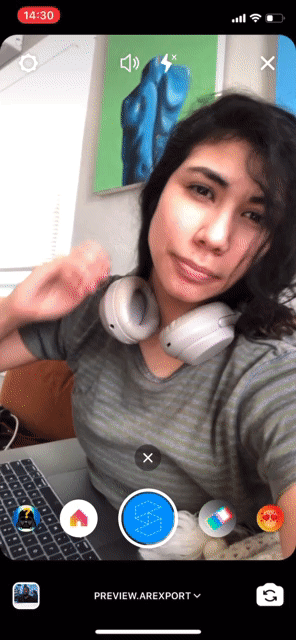
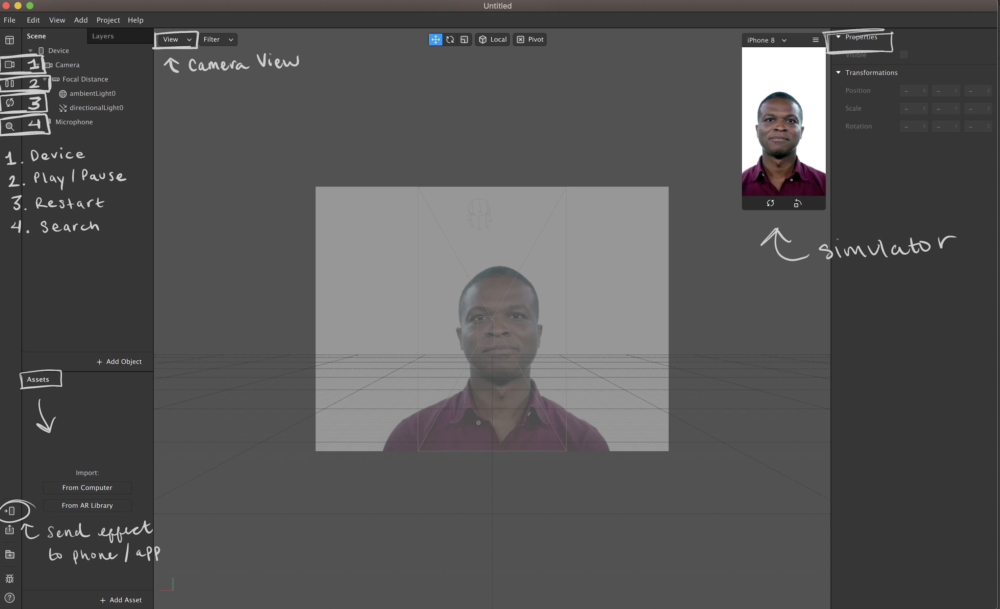
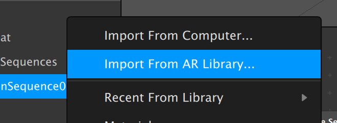
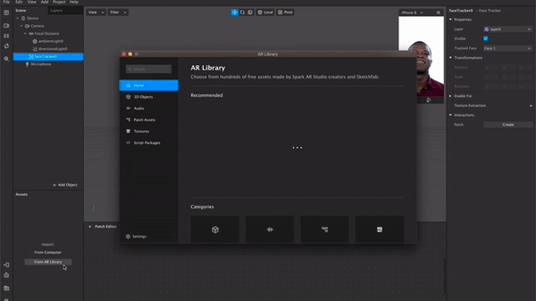
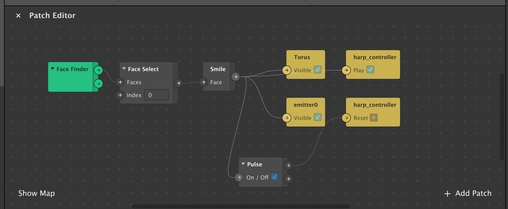

on
How to Create an Instagram Filter

We’re going to create an AR filter today, by the end of this tutorial you’ll have:
- The knowledge to create a custom filter.
- The ability to share said filter with friends
- Have created an effect with a halo, a stream of stars, and audio.
If you’re move of a visual learner, check out my video tutorial here
Let’s start by opening Spark AR Studio, if you don’t have it installed already, download it here
When you first open Spark AR, you’ll notice a series of template you can start from. Today we’re going to be starting from a blank project.
Whenever Spark AR opens, you’ll notice a video loop of someone making gestures, this is a simulation for you to see your changes real-time. You can cycle through a variety of people or use yourself via webcam by clicking on the camera icon on the left sidebar.

The first thing we’re going to add is the a face tracker. Within the scene toolbox, right click on ‘Camera’ and click on ‘Face Tracker’.
With the face tracker added to our scene, we’re going to start on adding the angel halo.
Click on ‘Add Asset’ in the bottom right of the ‘Assets’ toolbox. We’re going to add the 3D primitive shape Torus by clicking ‘Import From AR Library’.


You’ll also want to the add the ‘Particle System’ object from.
The final patch will looks like this:
